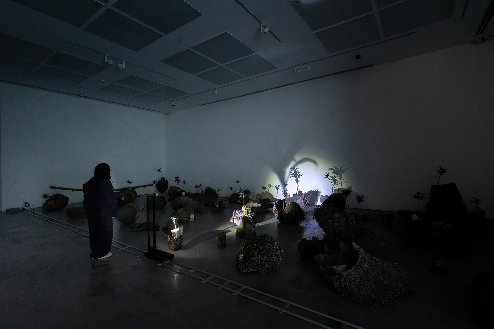
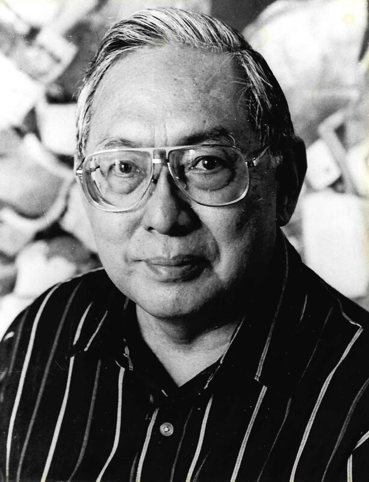
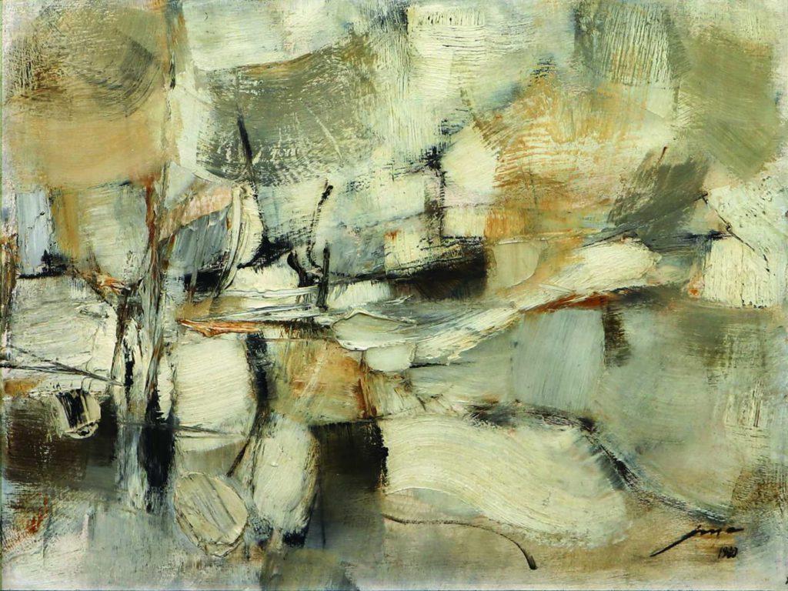
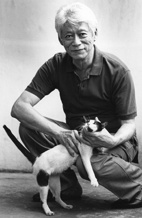
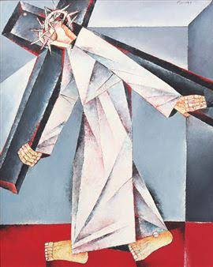
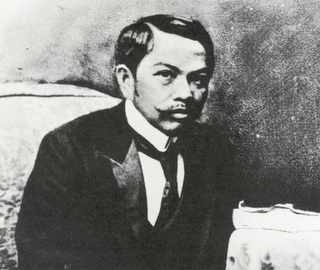
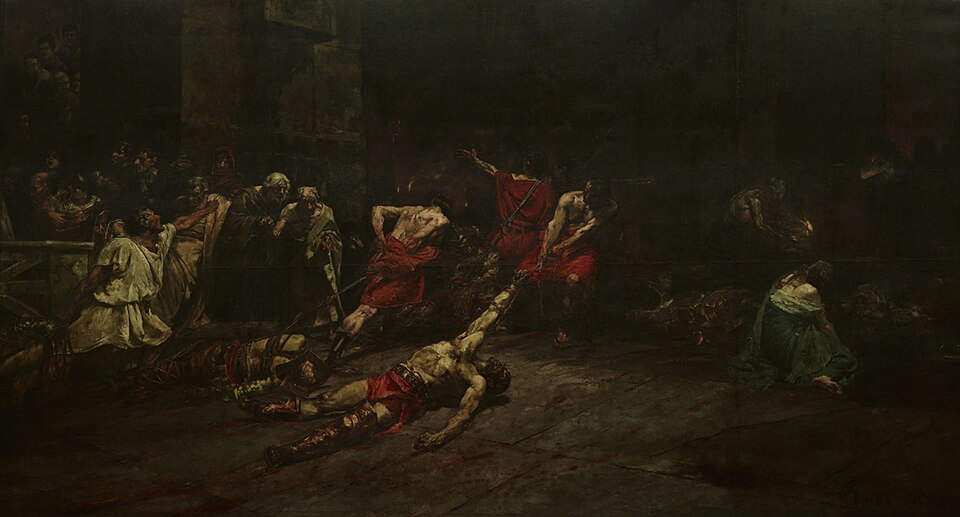
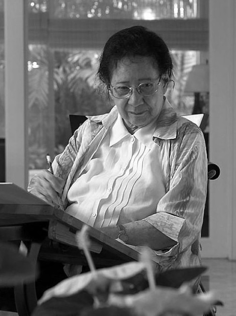
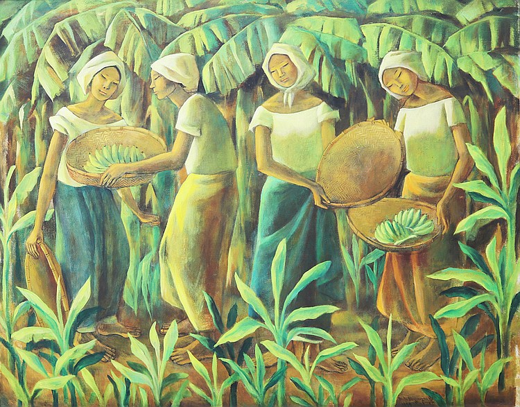

Artists and Artworks
Agnes Arellano

Born November 21, 1949
San Juan, Rizal
Carcass-Cornucopia, 1987

Cold-cast marble, unhulled rice, metal hooks, abaca rope
182.8 x 130 x 80 cm
The image is physically intense, but that intensity is important to my understanding of Filipino culture and the role of the body within it. Rice is a central food and cultural symbol in the Philippines. By placing rice beside organs and the exposed body, Arellano connects nourishment with physical vulnerability. The sculpture makes me think about birth, motherhood, labor, sacrifice, and mortality. I chose this work because it challenges idealized representations of motherhood. Instead of presenting the maternal body as peaceful or untouched, Arellano shows it as a site of labor, pain, creation, and transformation.
Martha Atienza

Born 1981
Manila, Philippines
The Coconut Tree Methodology No. 1

installation
x39 coconuts, x27 Ti plants, x6 bamboo sound machines with water batad shells, slider light machine
The coconut tree is a recognizable part of the Philippine landscape, but it can also suggest labor, agriculture, economy, environment, and national identity. Its meaning can shift depending on how it is represented and who is looking at it. Including Atienza alongside historically significant artists allows me to connect inherited cultural imagery with contemporary artistic practice. Her work helps me express the idea that Filipino identity is still developing through new methods, new technologies, and new relationships to place. I do not want the exhibition to suggest that Filipino culture is finished or preserved only through tradition instead, I want to show that culture continues to be created by each generation.
Benedicto Cabrera

Born April 10, 1942
Malabon, Philippines
Sabel,1966

Oil on Canvas
100 x 80 cm
Cabrera is a preeminent Filipino painter whose work often features women and men wrapped in swirling, bundled fabrics and capes. In Sabel, the woman is enclosed in white fabric. When I look at the figure, I see someone who appears both protected and restricted, visible and concealed at the same time. The fabric becomes more than clothing for me, it suggests the ways a person can be shaped by social expectations, poverty, memory, and the gaze of others. I connected with this work because it raises questions about how identity is formed. What parts of ourselves are allowed to be seen? What parts remain hidden because of culture, family, society, or personal struggle? As someone who has tried to understand where I belong between Filipino and American experiences, I see Sabel as an image of a person negotiating the space between exposure and concealment.
Imelda Cajipe Endaya

About the artist: National Artist of the Philippines for Visual Arts and the first woman to receive the distinction in the field.
Born November 21, 1949
San Juan, Rizal
Tutol ni Dolorosa

Acrylic on canvas
199.5 x 201.5 cm
The acrylic painting depicts a woman dressed in the attire of the Virgin Mary. Catholic imagery is an important part of Filipino cultural history, but it is also connected to the colonial systems that shaped Filipino beliefs and social expectations. The word “tutol” means to object or protest, so the title itself becomes a statement of resistance. It can be translated as The Protest of Dolorosa. This work reflects my desire to examine Catholicism not only as a religion that many Filipinos practice, but also as a cultural force that affected gender roles, traditions, and the loss of pre-colonial beliefs.
Jose Joya

Born June 3, 1931 to May 11, 1995
Manila, Philippines
Susurro del Mar, 1961

Oil on Wood
5.72 × 60.96 cm
Jose Joya’s Susurro del Mar from 1961 introduces another relationship to place through its reference to the sea. I selected this work because the sea is central to the geography and history of the Philippines. The country is an archipelago whose communities have long been connected through water. The sea can represent movement, distance, migration, trade, danger, and memory. It can separate people from one another, but it can also connect communities and carry stories across generations.
Ang Kiukok

March 1, 1931 to May 9, 2005
Born in Davao City, Philippines
Second Station: Jesus Carries His Cross, 1996

Oil on Canvas
114.3 × 91.44 cm
The image of Christ carrying the cross is central to Catholic visual culture, particularly in a country where Catholicism has become deeply connected to national and personal identity. However, I also see the image as representing broader experiences of burden, endurance, sacrifice, and injustice. What made me fond of this art work is the representation of Jesus carrying the cross and the artstyle choice. We don't see Jesus' face at all, yet can feel the anguish in which is being transpired in the painting.
Juan Luna

Born October 25, 1857 to December 7, 1899
Spoliarium, 1884

Oil on Canvas
13.8 ft × 25.18 ft
The Spoliarium has been known in my own family as the painting depicts an intense scene of fallen gladiators evokes violence, domination, and the loss of human dignity. I connect this work to the broader history of the Philippines under Spanish colonial rule. It allows me to think about how art can reflect the political tensions of its time while also expressing more universal experiences of suffering and oppression. The way how the surronding is very dim lit but the parts that have better exposure shows the gruesome scene of bodies being dragged with blood trailing.
Anita Magsaysay-Ho

Born May 25, 1914 to May 5, 2012
Born in Manila, Philippines
Women Amidst Bananas, 1979

Oil on Canvas
37.8 x 48.03in
I chose her because I want to recognize forms of labor that are often overlooked. Daily tasks may seem ordinary, but they can preserve traditions, relationships, and cultural patterns. Her work helps me understand Filipino identity through the routines and experiences of women whose lives are connected to family, community, and the physical environment. The simplicity of colors that wre chosen works well with the environment and how work life was in the Philippines. The greenery creates a frame around the four women to sought out the focus of them only.